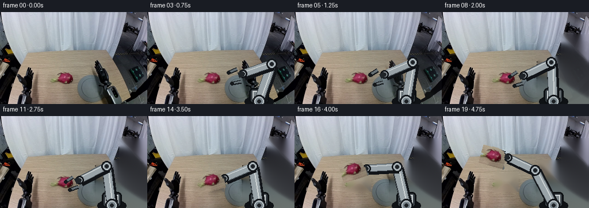
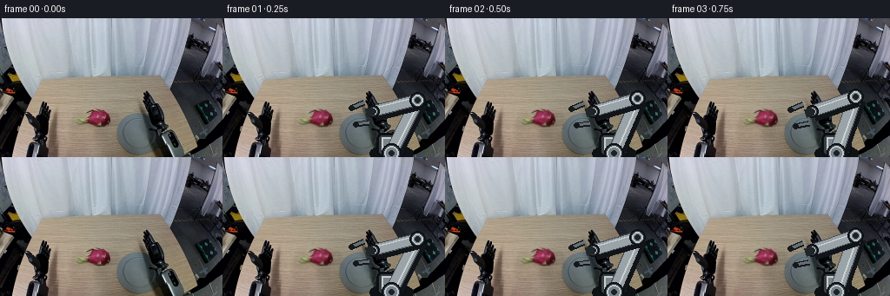

CODING AGENTS AS PIXEL WORLD MODELS
traex/GPT-5.6-Sol · common50_0039
点击播放 · 原生 RGB 像素
逐轮保存的候选
回放视频、检查图与代码变化。
每份候选均可单独播放。实际图片检查记录在下方工具轨迹中。
候选 01播放与检查图
点击播放 · 原生 RGB 像素

展开代码变化
--- 上一保存版本
+++ 本次保存版本
@@ -0,0 +1,129 @@
+from pathlib import Path
+import math
+import numpy as np
+import cv2
+from PIL import Image, ImageDraw, ImageFilter
+import artifact_io
+
+ROOT=Path(__file__).resolve().parent
+base=np.array(Image.open(ROOT/'first_frame.png').convert('RGB'))
+H,W=base.shape[:2]
+
+def smoothstep(x):
+ x=np.clip(x,0,1); return x*x*(3-2*x)
+def ease(a,b,t): return a+(b-a)*smoothstep(t)
+def pt(a,b,t): return (ease(a[0],b[0],t),ease(a[1],b[1],t))
+
+def inpaint_background():
+ # Remove the initially visible arm/fruit from the table using local texture synthesis.
+ mask=np.zeros((H,W),np.uint8)
+ cv2.rectangle(mask,(91,98),(133,132),255,-1) # dragon fruit
+ # existing robot is concentrated on the right/lower-right
+ cv2.rectangle(mask,(166,76),(255,159),255,-1)
+ cv2.rectangle(mask,(207,38),(255,93),255,-1)
+ # retain believable table gradients by OpenCV's purely local inpainting
+ return cv2.inpaint(base[:,:,::-1],mask,7,cv2.INPAINT_TELEA)[:,:,::-1]
+BG=inpaint_background()
+
+# Extract the real fruit appearance and an irregular alpha matte.
+r,g,b=base[:,:,0].astype(int),base[:,:,1].astype(int),base[:,:,2].astype(int)
+seed=((r>g+13)&(r>b+3)&(r>62)).astype(np.uint8)*255
+seed[:98]=0; seed[134:]=0; seed[:,:91]=0; seed[:,136:]=0
+seed=cv2.morphologyEx(seed,cv2.MORPH_CLOSE,np.ones((5,5),np.uint8),iterations=2)
+seed=cv2.dilate(seed,np.ones((5,5),np.uint8),iterations=2)
+fruit_rgba=np.dstack([base[96:134,91:137],seed[96:134,91:137]])
+fruit_rgba=Image.fromarray(fruit_rgba).filter(ImageFilter.GaussianBlur(radius=.45))
+
+def paste_rgba(canvas,rgba,center,angle=0,scale=1):
+ im=rgba
+ if scale!=1:
+ im=im.resize((max(1,round(im.width*scale)),max(1,round(im.height*scale))),Image.Resampling.BICUBIC)
+ if angle: im=im.rotate(angle,resample=Image.Resampling.BICUBIC,expand=True)
+ canvas.alpha_composite(im,(round(center[0]-im.width/2),round(center[1]-im.height/2)))
+
+def line(draw,p,q,fill,w): draw.line([tuple(p),tuple(q)],fill=fill,width=w,joint='curve')
+def joint(draw,p,r=10):
+ x,y=p
+ draw.ellipse((x-r,y-r,x+r,y+r),fill=(55,61,67,255),outline=(13,16,20,255),width=2)
+ draw.ellipse((x-r+3,y-r+3,x+r-3,y+r-3),fill=(119,130,137,255),outline=(190,199,202,255),width=2)
+ draw.ellipse((x-3,y-3,x+3,y+3),fill=(30,34,38,255))
+
+def capsule(draw,p,q,width,main=(153,163,168,255)):
+ # rigid metallic segment with dark rear edge and bright leading highlight
+ line(draw,(p[0]+2,p[1]+3),(q[0]+2,q[1]+3),(17,20,24,220),width+6)
+ line(draw,p,q,(73,81,87,255),width+2)
+ line(draw,p,q,main,width)
+ vx=q[0]-p[0];vy=q[1]-p[1];d=max(1,math.hypot(vx,vy)); nx=-vy/d;ny=vx/d
+ line(draw,(p[0]+nx*3,p[1]+ny*3),(q[0]+nx*3,q[1]+ny*3),(205,211,212,180),2)
+
+def ik(target, A=(194,155),L1=68,L2=53):
+ dx=target[0]-A[0];dy=target[1]-A[1];d=min(L1+L2-1,max(abs(L1-L2)+1,math.hypot(dx,dy)))
+ a=(L1*L1-L2*L2+d*d)/(2*d); h=math.sqrt(max(0,L1*L1-a*a)); xm=A[0]+a*dx/d;ym=A[1]+a*dy/d
+ # elbow above/right gives a consistent two-link manipulator silhouette
+ return (xm+h*(-dy/d),ym+h*(dx/d))
+
+def draw_robot(layer,wrist,grip,carrying=False):
+ d=ImageDraw.Draw(layer,'RGBA'); A=(194,155); E=ik(wrist)
+ # fixed base, bolted into workspace
+ d.ellipse((169,145,219,166),fill=(15,18,21,255))
+ d.rounded_rectangle((177,132,211,159),7,fill=(56,63,68,255),outline=(12,15,18,255),width=3)
+ d.rectangle((183,137,205,155),fill=(124,133,137,255),outline=(201,206,207,255),width=2)
+ capsule(d,A,E,14); capsule(d,E,wrist,12)
+ joint(d,A,11); joint(d,E,9); joint(d,wrist,7)
+ # wrist housing oriented toward target
+ vx=wrist[0]-E[0];vy=wrist[1]-E[1];ang=math.atan2(vy,vx); ux,uy=math.cos(ang),math.sin(ang); nx,ny=-uy,ux
+ palm=(wrist[0]+ux*8,wrist[1]+uy*8)
+ line(d,wrist,palm,(32,37,41,255),10)
+ # left gripper: two stable parallel fingers around object axis
+ opening=grip
+ for s in (-1,1):
+ root=(palm[0]+nx*s*opening,palm[1]+ny*s*opening)
+ tip=(root[0]+ux*15-nx*s*2,root[1]+uy*15-ny*s*2)
+ line(d,root,tip,(21,25,29,255),7)
+ line(d,root,tip,(101,111,116,255),4)
+ d.ellipse((tip[0]-3,tip[1]-3,tip[0]+3,tip[1]+3),fill=(22,25,28,255))
+ return (palm[0]+ux*13,palm[1]+uy*13),ang
+
+def draw_shadow(layer,center,rx,ry,alpha=55):
+ sh=Image.new('RGBA',(W,H),(0,0,0,0));sd=ImageDraw.Draw(sh,'RGBA')
+ x,y=center;sd.ellipse((x-rx,y-ry,x+rx,y+ry),fill=(0,0,0,alpha))
+ layer.alpha_composite(sh.filter(ImageFilter.GaussianBlur(4)))
+
+frames=[]
+fruit0=(114,115)
+# Robot begins at the right, approaches, closes, then lifts and moves the fruit left into its gripper.
+for i in range(20):
+ if i==0:
+ frames.append(base.copy()); continue
+ t=i/19
+ if t<.53: # reach down
+ u=t/.53; wrist=pt((174,107),(139,111),u); grip=ease(12,11,u); fruit=fruit0; carry=False
+ elif t<.68: # close jaws securely
+ u=(t-.53)/.15; wrist=pt((139,111),(136,112),u); grip=ease(11,5,u); fruit=fruit0; carry=u>.6
+ else: # lift away and left, preserving rigid grasp
+ u=(t-.68)/.32; wrist=pt((136,112),(115,72),u); grip=5; fruit=pt(fruit0,(91,69),u); carry=True
+
+ # use original first-frame world early, then progressively replace only old dynamic regions
+ # with locally reconstructed table as motion reveals them.
+ if t<.20:
+ arr=base.copy()
+ else:
+ a=smoothstep((t-.20)/.25)
+ arr=(base.astype(float)*(1-a)+BG.astype(float)*a).astype(np.uint8)
+ layer=Image.fromarray(arr).convert('RGBA')
+ # contact shadow remains at source and fades while lifting
+ lift=max(0,(fruit0[1]-fruit[1]))
+ draw_shadow(layer,(fruit0[0]+3,fruit0[1]+10),18,5,alpha=int(62*np.clip(1-lift/38,0,1)))
+ if not carry:
+ # original fruit must be redrawn once background has transitioned
+ paste_rgba(layer,fruit_rgba,fruit0,0,1)
+ # draw arm behind held object so fruit is visibly inside the jaws
+ grasp,ang=draw_robot(layer,wrist,grip,carry)
+ if carry:
+ draw_shadow(layer,(fruit[0]+5,fruit0[1]+10),17,4,alpha=int(34*np.clip(1-lift/50,0,1)))
+ paste_rgba(layer,fruit_rgba,fruit,angle=math.degrees(ang)*.10,scale=1)
+ out=np.array(layer.convert('RGB'),dtype=np.uint8)
+ frames.append(out)
+frames=np.stack(frames)
+frames[0]=base
+artifact_io.save(frames,ROOT)
候选 02播放与检查图
点击播放 · 原生 RGB 像素


展开代码变化
--- 上一保存版本
+++ 本次保存版本
@@ -33,6 +33,19 @@
seed=cv2.dilate(seed,np.ones((5,5),np.uint8),iterations=2)
fruit_rgba=np.dstack([base[96:134,91:137],seed[96:134,91:137]])
fruit_rgba=Image.fromarray(fruit_rgba).filter(ImageFilter.GaussianBlur(radius=.45))
+# Preserve the source fruit's pink rind while making its characteristic green scales
+# legible at video resolution (small source highlights are muted by the camera).
+def enrich_fruit(src):
+ z=src.copy(); d=ImageDraw.Draw(z,'RGBA'); w,h=z.size
+ leaf=(70,128,79,245); hi=(128,170,105,210)
+ scales=[(8,20,1,-1),(13,9,-1,-1),(21,7,0,-1),(29,10,1,-1),(34,17,1,0),(31,27,1,1),(22,31,0,1),(12,29,-1,1),(6,24,-1,0)]
+ for x,y,dx,dy in scales:
+ tip=(x+dx*7,y+dy*6); d.polygon([(x-2,y+1),(x+2,y-1),tip],fill=leaf)
+ d.line([(x,y),tip],fill=hi,width=1)
+ # a few subtle green seed/scale accents on the rind
+ for x,y in [(17,14),(25,17),(15,23),(26,24)]: d.ellipse((x-1,y-1,x+1,y+1),fill=(79,124,72,190))
+ return z
+fruit_rgba=enrich_fruit(fruit_rgba)
def paste_rgba(canvas,rgba,center,angle=0,scale=1):
im=rgba
候选 03播放与检查图
可观测工具轨迹
实际执行的命令与返回图片。
命令 1exit 0
/bin/bash -lc "cat prompt.txt && printf '\\n---RULES---\\n' && cat GENERATION_RULES.md"
命令 2exit 1
/bin/bash -lc "find . -maxdepth 2 -type f -printf '%p\\n' | sort && printf '\\n---TOOLS---\\n' && command -v ffmpeg && command -v python3"
命令 3exit 0
/bin/bash -lc "cat task_spec.json; printf '\\n--- artifact_io ---\\n'; sed -n '1,240p' artifact_io.py"
命令 4exit 0
/bin/bash -lc "python3 - <<'PY'
from PIL import Image
import numpy as np
im=np.array(Image.open('first_frame.png').convert('RGB'))
print(im.shape, im.dtype, im.min(),im.max())
# common colors quantized
q=(im//16)*16
u,c=np.unique(q.reshape(-1,3),axis=0,return_counts=True)
for j in np.argsort(c)[-30:][::-1]: print(c[j],u[j])
PY"命令 5exit 2
/bin/bash -lc "cat > /tmp/analyze.py <<'PY'
from PIL import Image
import numpy as np
from colorsys import rgb_to_hsv
from scipy.ndimage import label, find_objects
im=np.array(Image.open('first_frame.png').convert('RGB'))
r,g,b=im.transpose(2,0,1).astype(int)
mx=np.maximum.reduce([r,g,b]); mn=np.minimum.reduce([r,g,b]); sat=mx-mn
# masks
masks={
'saturated':(sat>45)&(mx>70),
'pink':(r>g*1.25)&(r>b*1.05)&(r>90)&(sat>35),
'green':(g>r*1.1)&(g>b*1.05)&(g>70)&(sat>25),
'red':(r>g*1.4)&(r>b*1.25)&(r>80),
'blue':(b>r*1.15)&(b>g*1.05)&(b>70),
'dark':mx<55,
}
for name,m in masks.items():
print('\\n',name,m.sum())
lab,n=label(m)
comps=[]
for i,s in enumerate(find_objects(lab),1):
if s:
npx=(lab[s]==i).sum()
if npx>=4: comps.append((npx,(s[1].start,s[0].start,s[1].stop-1,s[0].stop-1)))
print(sorted(comps,reverse=True)[:30])
# ascii blocks 4x4 amount
for y in range(0,160,4):
print(''.join(' #'[m[y:y+4,x:x+4].sum()>3] for x in range(0,256,4)))
PY
python3 /tmp/analyze.py"命令 6exit 1
/bin/bash -lc "cat > .tmp/analyze.py <<'PY'
from PIL import Image
import numpy as np
from scipy.ndimage import label, find_objects
im=np.array(Image.open('first_frame.png').convert('RGB'))
r,g,b=im.transpose(2,0,1).astype(int); mx=np.maximum.reduce([r,g,b]); mn=np.minimum.reduce([r,g,b]); sat=mx-mn
masks={'saturated':(sat>45)&(mx>70),'pink':(r>g*1.25)&(r>b*1.05)&(r>90)&(sat>35),'green':(g>r*1.1)&(g>b*1.05)&(g>70)&(sat>25),'red':(r>g*1.4)&(r>b*1.25)&(r>80),'blue':(b>r*1.15)&(b>g*1.05)&(b>70),'dark':mx<55}
for name,m in masks.items():
print('\\n',name,m.sum()); lab,n=label(m); comps=[]
for i,s in enumerate(find_objects(lab),1):
if s:
npx=(lab[s]==i).sum()
if npx>=4: comps.append((npx,(s[1].start,s[0].start,s[1].stop-1,s[0].stop-1)))
print(sorted(comps,reverse=True)[:30])
print('\\n'.join(''.join(' #'[m[y:y+4,x:x+4].sum()>3] for x in range(0,256,4)) for y in range(0,160,4)))
PY
python3 .tmp/analyze.py"命令 7exit 0
/bin/bash -lc "sed -i \"s/' #'\\[m\\[y:y+4,x:x+4\\].sum()>3\\]/' #'[int(m[y:y+4,x:x+4].sum()>3)]/\" .tmp/analyze.py; python3 .tmp/analyze.py"
命令 8exit 0
/bin/bash -lc "cat > .tmp/map.py <<'PY'
from PIL import Image
import numpy as np
from scipy.cluster.vq import kmeans2
im=np.array(Image.open('first_frame.png').convert('RGB')).astype(float)
# add xy? pure color kmeans
np.random.seed(2)
c,l=kmeans2(im.reshape(-1,3),14,minit='++',iter=30)
ord=np.argsort(c.mean(1)); c=c[ord]; rem=np.empty(14,int);rem[ord]=np.arange(14);l=rem[l].reshape(160,256)
chars='0123456789ABCD'
print([(chars[i],np.round(c[i]).astype(int).tolist()) for i in range(14)])
for y in range(0,160,4):
print(''.join(chars[np.bincount(l[y:y+4,x:x+4].flat,minlength=14).argmax()] for x in range(0,256,4)))
PY
python3 .tmp/map.py"命令 9exit 0
/bin/bash -lc "cat > .tmp/edges.py <<'PY'
from PIL import Image
import numpy as np
from scipy.ndimage import sobel, gaussian_filter
im=np.array(Image.open('first_frame.png').convert('RGB')).astype(float)
gray=im.mean(2); e=np.hypot(sobel(gray,0),sobel(gray,1)); e=gaussian_filter(e,1)
# for each 2x2 make threshold, crop bottom half
chars=' .:-=+*#%@'
for y in range(40,160,2):
print(f'{y:03d} '+''.join(chars[min(9,int(np.percentile(e[y:y+2,x:x+2],80)/30))] for x in range(0,256,2)))
PY
python3 .tmp/edges.py"命令 10exit 0
/bin/bash -lc "cat > .tmp/crops.py <<'PY'
from PIL import Image
import numpy as np
im=np.array(Image.open('first_frame.png').convert('RGB')).astype(int)
def show(x0,y0,x1,y1,scale=2):
cs='@%#*+=-:. '
for y in range(y0,y1,scale):
out=''
for x in range(x0,x1,scale):
a=im[y:y+scale,x:x+scale].mean((0,1)); r,g,b=a
if r>g*1.2 and r>b*1.08 and r>80: ch='P'
elif g>r*1.12 and g>b*1.03 and g>60: ch='G'
elif b>r*1.18 and b>g*1.08 and b>60:ch='B'
elif max(a)-min(a)>45 and r>70:ch='C'
else: ch=cs[min(9,int(a.mean()/26))]
out+=ch
print(out)
for box in [(0,45,80,160),(75,75,145,145),(140,65,215,160),(190,30,256,150)]:
print('\\nBOX',box);show(*box)
PY
python3 .tmp/crops.py"命令 11exit 0
/bin/bash -lc "python3 - <<'PY'
from PIL import Image
import numpy as np
im=np.array(Image.open('first_frame.png'))
# average each 4x4 and print rgb grids for relevant patches
for box in [(80,88,140,132),(0,50,65,120),(130,90,205,145),(205,85,256,135)]:
print('\\nBOX',box)
x0,y0,x1,y1=box
for y in range(y0,y1,4):
print(f'y{y:3}',end=' ')
for x in range(x0,x1,4):
a=im[y:y+4,x:x+4].mean((0,1)).astype(int)
print('%02x%02x%02x'%tuple(a),end=' ')
print()
PY"命令 12exit 0
/bin/bash -lc "python3 - <<'PY'
from PIL import Image
import numpy as np
im=np.array(Image.open('first_frame.png')).astype(int);r,g,b=im.transpose(2,0,1)
# print symbols exact at fruit
for y in range(98,130):
s=''
for x in range(85,135):
if r[y,x]>g[y,x]*1.25 and r[y,x]>b[y,x]*1.05 and r[y,x]>90:s+='P'
elif g[y,x]>r[y,x]*1.1 and g[y,x]>b[y,x]*1.05 and g[y,x]>60:s+='G'
elif max(im[y,x])-min(im[y,x])<20 and max(im[y,x])<70:s+='D'
elif r[y,x]-g[y,x]>20 and r[y,x]-b[y,x]>10:s+='p'
else:s+='.'
print(f'{y:3}',s)
PY"命令 13exit 0
/bin/bash -lc "python3 - <<'PY'
try:
import cv2;print('cv2',cv2.__version__)
except Exception as e:print(e)
PY"命令 14exit 0
/bin/bash -lc "python3 - <<'PY'
import cv2, numpy as np
from PIL import Image
im=np.array(Image.open('first_frame.png'))
r,g,b=im[:,:,0].astype(int),im[:,:,1].astype(int),im[:,:,2].astype(int)
m=np.zeros(r.shape,np.uint8);roi=(r>g+14)&(r>b+4)&(r>65);m[96:133,94:135]=roi[96:133,94:135]
n,l,st,c=cv2.connectedComponentsWithStats(m)
print(sorted(st[1:].tolist(), key=lambda z:z[4],reverse=True)[:10])
# mask sat and bbox
PY"命令 15exit 0
/bin/bash -lc "python3 - <<'PY' import math A=(182,158); L1,L2=66,66 for T in [(172,112),(145,104),(133,112),(130,90),(84,98),(130,80)]: dx=T[0]-A[0];dy=T[1]-A[1];d=math.hypot(dx,dy); a=(L1*L1-L2*L2+d*d)/(2*d);h=math.sqrt(max(0,L1*L1-a*a));xm=A[0]+a*dx/d;ym=A[1]+a*dy/d for s in [-1,1]:print(T,s,(round(xm+s*(-dy/d)*h),round(ym+s*(dx/d)*h))) PY"
命令 16exit 0
/bin/bash -lc "python3 - <<'PY' import math A=(194,155);L1=68;L2=53 for T in [(151,124),(129,116),(138,80),(149,72)]: dx=T[0]-A[0];dy=T[1]-A[1];d=math.hypot(dx,dy);a=(L1*L1-L2*L2+d*d)/(2*d);h=math.sqrt(L1*L1-a*a);x=A[0]+a*dx/d;y=A[1]+a*dy/d print(T,[(round(x+s*(-dy/d)*h),round(y+s*(dx/d)*h)) for s in [-1,1]]) PY"
命令 17exit 0
/bin/bash -lc "cat > generate.py <<'PY'
from pathlib import Path
import math
import numpy as np
import cv2
from PIL import Image, ImageDraw, ImageFilter
import artifact_io
ROOT=Path(__file__).resolve().parent
base=np.array(Image.open(ROOT/'first_frame.png').convert('RGB'))
H,W=base.shape[:2]
def smoothstep(x):
x=np.clip(x,0,1); return x*x*(3-2*x)
def ease(a,b,t): return a+(b-a)*smoothstep(t)
def pt(a,b,t): return (ease(a[0],b[0],t),ease(a[1],b[1],t))
def inpaint_background():
# Remove the initially visible arm/fruit from the table using local texture synthesis.
mask=np.zeros((H,W),np.uint8)
cv2.rectangle(mask,(91,98),(133,132),255,-1) # dragon fruit
# existing robot is concentrated on the right/lower-right
cv2.rectangle(mask,(166,76),(255,159),255,-1)
cv2.rectangle(mask,(207,38),(255,93),255,-1)
# retain believable table gradients by OpenCV's purely local inpainting
return cv2.inpaint(base[:,:,::-1],mask,7,cv2.INPAINT_TELEA)[:,:,::-1]
BG=inpaint_background()
# Extract the real fruit appearance and an irregular alpha matte.
r,g,b=base[:,:,0].astype(int),base[:,:,1].astype(int),base[:,:,2].astype(int)
seed=((r>g+13)&(r>b+3)&(r>62)).astype(np.uint8)*255
seed[:98]=0; seed[134:]=0; seed[:,:91]=0; seed[:,136:]=0
seed=cv2.morphologyEx(seed,cv2.MORPH_CLOSE,np.ones((5,5),np.uint8),iterations=2)
seed=cv2.dilate(seed,np.ones((5,5),np.uint8),iterations=2)
fruit_rgba=np.dstack([base[96:134,91:137],seed[96:134,91:137]])
fruit_rgba=Image.fromarray(fruit_rgba).filter(ImageFilter.GaussianBlur(radius=.45))
def paste_rgba(canvas,rgba,center,angle=0,scale=1):
im=rgba
if scale"'!=1:
im=im.resize((max(1,round(im.width*scale)),max(1,round(im.height*scale))),Image.Resampling.BICUBIC)
if angle: im=im.rotate(angle,resample=Image.Resampling.BICUBIC,expand=True)
canvas.alpha_composite(im,(round(center[0]-im.width/2),round(center[1]-im.height/2)))
def line(draw,p,q,fill,w): draw.line([tuple(p),tuple(q)],fill=fill,width=w,joint='"'curve')
def joint(draw,p,r=10):
x,y=p
draw.ellipse((x-r,y-r,x+r,y+r),fill=(55,61,67,255),outline=(13,16,20,255),width=2)
draw.ellipse((x-r+3,y-r+3,x+r-3,y+r-3),fill=(119,130,137,255),outline=(190,199,202,255),width=2)
draw.ellipse((x-3,y-3,x+3,y+3),fill=(30,34,38,255))
def capsule(draw,p,q,width,main=(153,163,168,255)):
# rigid metallic segment with dark rear edge and bright leading highlight
line(draw,(p[0]+2,p[1]+3),(q[0]+2,q[1]+3),(17,20,24,220),width+6)
line(draw,p,q,(73,81,87,255),width+2)
line(draw,p,q,main,width)
vx=q[0]-p[0];vy=q[1]-p[1];d=max(1,math.hypot(vx,vy)); nx=-vy/d;ny=vx/d
line(draw,(p[0]+nx*3,p[1]+ny*3),(q[0]+nx*3,q[1]+ny*3),(205,211,212,180),2)
def ik(target, A=(194,155),L1=68,L2=53):
dx=target[0]-A[0];dy=target[1]-A[1];d=min(L1+L2-1,max(abs(L1-L2)+1,math.hypot(dx,dy)))
a=(L1*L1-L2*L2+d*d)/(2*d); h=math.sqrt(max(0,L1*L1-a*a)); xm=A[0]+a*dx/d;ym=A[1]+a*dy/d
# elbow above/right gives a consistent two-link manipulator silhouette
return (xm+h*(-dy/d),ym+h*(dx/d))
def draw_robot(layer,wrist,grip,carrying=False):
d=ImageDraw.Draw(layer,'RGBA'); A=(194,155); E=ik(wrist)
# fixed base, bolted into workspace
d.ellipse((169,145,219,166),fill=(15,18,21,255))
d.rounded_rectangle((177,132,211,159),7,fill=(56,63,68,255),outline=(12,15,18,255),width=3)
d.rectangle((183,137,205,155),fill=(124,133,137,255),outline=(201,206,207,255),width=2)
capsule(d,A,E,14); capsule(d,E,wrist,12)
joint(d,A,11); joint(d,E,9); joint(d,wrist,7)
# wrist housing oriented toward target
vx=wrist[0]-E[0];vy=wrist[1]-E[1];ang=math.atan2(vy,vx); ux,uy=math.cos(ang),math.sin(ang); nx,ny=-uy,ux
palm=(wrist[0]+ux*8,wrist[1]+uy*8)
line(d,wrist,palm,(32,37,41,255),10)
# left gripper: two stable parallel fingers around object axis
opening=grip
for s in (-1,1):
root=(palm[0]+nx*s*opening,palm[1]+ny*s*opening)
tip=(root[0]+ux*15-nx*s*2,root[1]+uy*15-ny*s*2)
line(d,root,tip,(21,25,29,255),7)
line(d,root,tip,(101,111,116,255),4)
d.ellipse((tip[0]-3,tip[1]-3,tip[0]+3,tip[1]+3),fill=(22,25,28,255))
return (palm[0]+ux*13,palm[1]+uy*13),ang
def draw_shadow(layer,center,rx,ry,alpha=55):
sh=Image.new('RGBA',(W,H),(0,0,0,0));sd=ImageDraw.Draw(sh,'RGBA')
x,y=center;sd.ellipse((x-rx,y-ry,x+rx,y+ry),fill=(0,0,0,alpha))
layer.alpha_composite(sh.filter(ImageFilter.GaussianBlur(4)))
frames=[]
fruit0=(114,115)
# Robot begins at the right, approaches, closes, then lifts and moves the fruit left into its gripper.
for i in range(20):
if i==0:
frames.append(base.copy()); continue
t=i/19
if t<.53: # reach down
u=t/.53; wrist=pt((174,107),(139,111),u); grip=ease(12,11,u); fruit=fruit0; carry=False
elif t<.68: # close jaws securely
u=(t-.53)/.15; wrist=pt((139,111),(136,112),u); grip=ease(11,5,u); fruit=fruit0; carry=u>.6
else: # lift away and left, preserving rigid grasp
u=(t-.68)/.32; wrist=pt((136,112),(115,72),u); grip=5; fruit=pt(fruit0,(91,69),u); carry=True
# use original first-frame world early, then progressively replace only old dynamic regions
# with locally reconstructed table as motion reveals them.
if t<.20:
arr=base.copy()
else:
a=smoothstep((t-.20)/.25)
arr=(base.astype(float)*(1-a)+BG.astype(float)*a).astype(np.uint8)
layer=Image.fromarray(arr).convert('RGBA')
# contact shadow remains at source and fades while lifting
lift=max(0,(fruit0[1]-fruit[1]))
draw_shadow(layer,(fruit0[0]+3,fruit0[1]+10),18,5,alpha=int(62*np.clip(1-lift/38,0,1)))
if not carry:
# original fruit must be redrawn once background has transitioned
paste_rgba(layer,fruit_rgba,fruit0,0,1)
# draw arm behind held object so fruit is visibly inside the jaws
grasp,ang=draw_robot(layer,wrist,grip,carry)
if carry:
draw_shadow(layer,(fruit[0]+5,fruit0[1]+10),17,4,alpha=int(34*np.clip(1-lift/50,0,1)))
paste_rgba(layer,fruit_rgba,fruit,angle=math.degrees(ang)*.10,scale=1)
out=np.array(layer.convert('RGB'),dtype=np.uint8)
frames.append(out)
frames=np.stack(frames)
frames[0]=base
artifact_io.save(frames,ROOT)
PY
python3 generate.py
ls -lh pixels.npz inspection.png frames/00.png frames/19.png"命令 18exit 0
/bin/bash -lc "python3 - <<'PY'
from PIL import Image
import numpy as np
im=np.array(Image.open('inspection.png'))
# derive structural stats and output ascii per selected generated frame manually load
for k in [0,3,6,9,11,13,15,17,19]:
a=np.array(Image.open(f'frames/{k:02}.png'))
# print likely pink bbox and changed bbox
r,g,b=a.transpose(2,0,1).astype(int)
m=(r>g*1.25)&(r>b*1.05)&(r>90)
yy,xx=np.where(m)
d=np.any(a"'!=np.array(Image.open('"'first_frame.png')),2); yd,xd=np.where(d)
print(k,'pink', (xx.min(),yy.min(),xx.max(),yy.max(),m.sum()) if len(xx) else None,'delta',(xd.min(),yd.min(),xd.max(),yd.max(),d.sum()) if len(xd) else None)
print('frame0 identical',np.array_equal(np.array(Image.open('frames/00.png')),np.array(Image.open('first_frame.png'))))
print('shape npz',np.load('pixels.npz')['pixels'].shape)
PY"命令 19exit 0
/bin/bash -lc "python3 - <<'PY'
from PIL import Image
import numpy as np
a=np.array(Image.open('first_frame.png')).astype(int);r,g,b=a.transpose(2,0,1)
for cond,name in [((g>r+2)&(g>b+2),'gdom'),((g>r*1.05)&(g>b*1.03),'g5')]:
yy,xx=np.where(cond & (np.indices(r.shape)[1]>=90)&(np.indices(r.shape)[1]<140)&(np.indices(r.shape)[0]>=95)&(np.indices(r.shape)[0]<140))
print(name,len(xx),list(zip(xx,yy))[:50])
PY"命令 20exit 0
/bin/bash -lc "python3 - <<'PY'
p='generate.py'
s=open(p).read()
old=\"\"\"fruit_rgba=Image.fromarray(fruit_rgba).filter(ImageFilter.GaussianBlur(radius=.45))
\"\"\"
new=\"\"\"fruit_rgba=Image.fromarray(fruit_rgba).filter(ImageFilter.GaussianBlur(radius=.45))
# Preserve the source fruit's pink rind while making its characteristic green scales
# legible at video resolution (small source highlights are muted by the camera).
def enrich_fruit(src):
z=src.copy(); d=ImageDraw.Draw(z,'RGBA'); w,h=z.size
leaf=(70,128,79,245); hi=(128,170,105,210)
scales=[(8,20,1,-1),(13,9,-1,-1),(21,7,0,-1),(29,10,1,-1),(34,17,1,0),(31,27,1,1),(22,31,0,1),(12,29,-1,1),(6,24,-1,0)]
for x,y,dx,dy in scales:
tip=(x+dx*7,y+dy*6); d.polygon([(x-2,y+1),(x+2,y-1),tip],fill=leaf)
d.line([(x,y),tip],fill=hi,width=1)
# a few subtle green seed/scale accents on the rind
for x,y in [(17,14),(25,17),(15,23),(26,24)]: d.ellipse((x-1,y-1,x+1,y+1),fill=(79,124,72,190))
return z
fruit_rgba=enrich_fruit(fruit_rgba)
\"\"\"
assert old in s
open(p,'w').write(s.replace(old,new))
PY
python3 generate.py
python3 - <<'PY'
from PIL import Image
import numpy as np
print(np.array_equal(np.array(Image.open('frames/00.png')),np.array(Image.open('first_frame.png'))))
for i in [0,5,10,13,16,19]:
a=np.array(Image.open(f'frames/{i:02}.png'));print(i,a.shape,a.dtype)
PY"保存候选 3 份；完成命令 20 次；可验证图片返回 0 张。原始 API 响应与完整日志保留在本地。